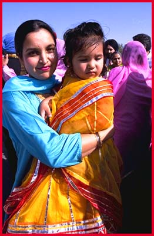

Sikh Wedding

The Milni
A simple ceremony takes place and both families exchange well wishes on meeting each other. This is followed by light snacks and tea before the religious ceremony begins.
|  A mother & daughter enjoy the moment. |
One by one designated family members exchange garlands and a hug. |
The groom distributes Karah Prashad (ceremonial sacremental pudding) to his family. |
|
Everyone enjoys tea and snacks in a large tent beside the Gurdwara. |